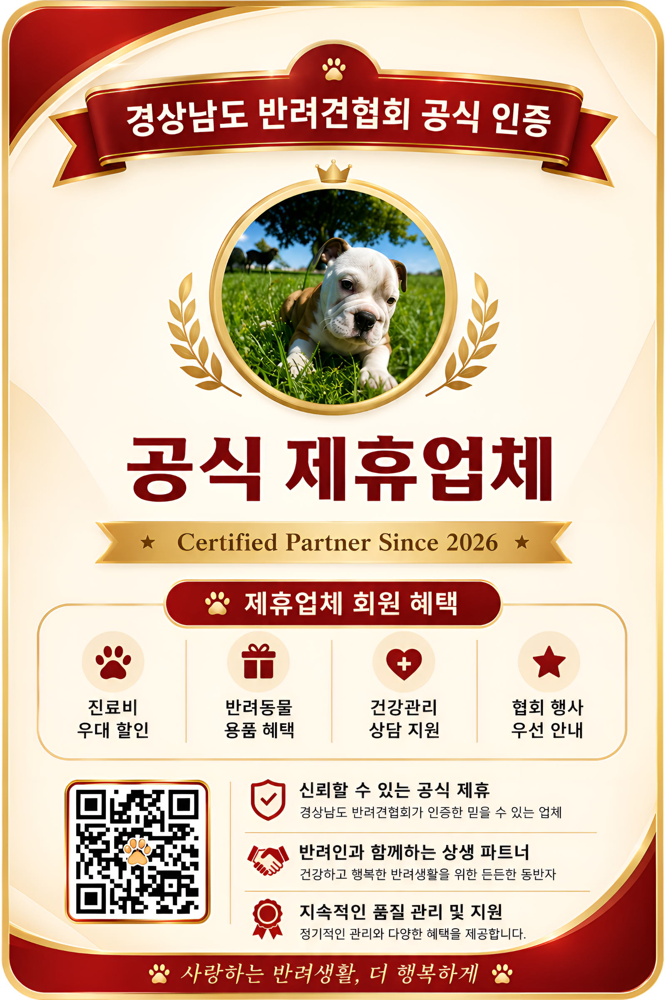

생명존중
모든 반려견은 소중한 생명이며, 존엄하게 대우받아야 합니다.
OVERVIEW OF THE COMPANION DOG
ASSOCIATION
GREETING
MISSION & VALUES
경상남도 반려견 협회는 반려견들과 비반려견인과의 친목과 단결을 도모하고, 이를 바탕으로 반려견 복지 향상에 기여하며, 반려인으로서의 긍지를 실현함과 비반려인과의 유대관계 형성을 목적으로 합니다.
모든 반려견은 소중한 생명이며, 존엄하게 대우받아야 합니다.
반려인과 비반려인이 함께 행복한 지역사회를 만들어갑니다.
올바른 반려 문화 정착을 위한 교육과 캠페인을 지속합니다.
회원과 지역사회에 투명하게 운영 현황을 공개합니다.
HISTORY
ORGANIZATION
CONTACT
주소 경남 창원시 성산구 용지로 159, iM뱅크(대구은행) 4층 405호
대표자 심규진
고유번호 539-80-02508
전화 010-3556-8603
이메일 shim194200@gmail.com
운영시간 평일 09:00 ~ 18:00
MEMBERSHIP
홍길동님, 오늘부터
경상남도 반려견협회
정회원으로 함께합니다!
